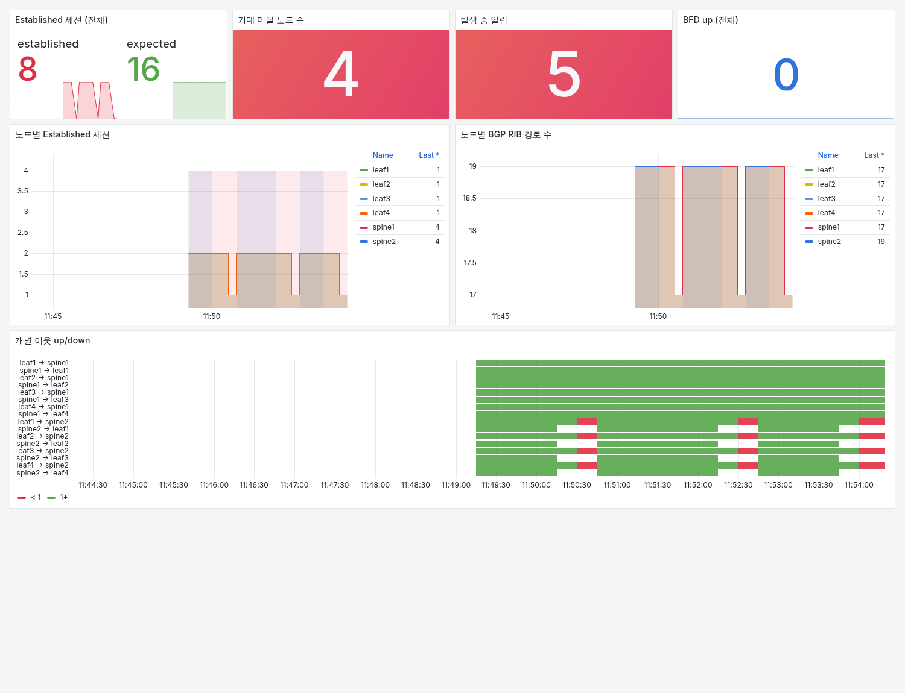
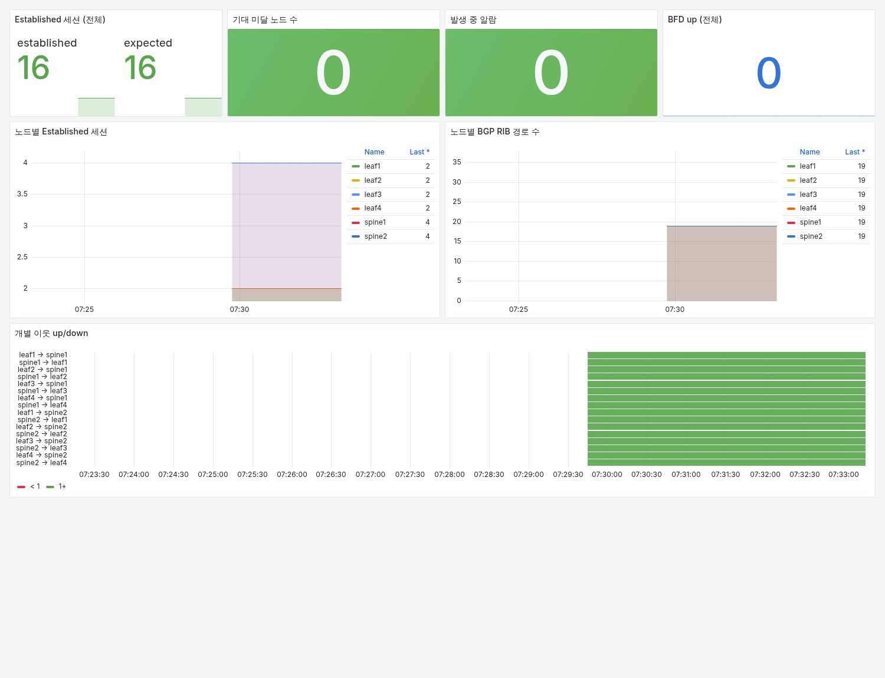
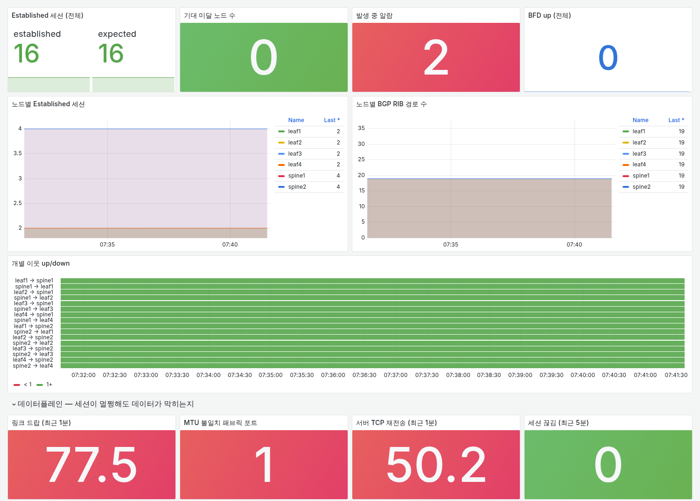

Kubernetes 클러스터(컨트롤러 3대, 워커 5대)와 Ceph 4대를 랙 3개에 넣는 데이터센터 네트워크를 설계했습니다. 장비 목록부터 늘어놓기보다 패킷이 실제로 어떤 길로 다니는지를 먼저 보여 드리고, 구간마다 왜 그렇게 만들었는지를 설명하는 순서로 정리했습니다.
이 설계에서 가장 먼저 정한 원칙은 트래픽 종류마다 길을 따로 두는 것입니다. 웹 요청, 워커와 Ceph 사이의 스토리지 I/O, Ceph끼리의 복제, 관리 접속은 양도 다르고 문제가 생겼을 때의 영향도 다릅니다. 한 길에 섞어 두면 복제가 몰릴 때 서비스 I/O까지 느려지고, 한 구역이 뚫리면 다른 구역도 위험해집니다. 그래서 NIC, VLAN, VRF를 각각 나눴고, 구역 사이는 방화벽을 통해서만 오가게 했습니다.
설정은 손으로 만들지 않았습니다. 랙, 장비, 주소 같은 설계 값을 YAML 파일 하나에 적고, 스위치 설정과 IP 표, 배선표, 모니터링 대상은 모두 이 파일에서 생성했습니다.
먼저 토폴로지 위에서 패킷이 실제로 지나가는 길을 따라갑니다. 손님의 요청부터 장애 때의 우회까지.
그 길을 까는 데 필요한 장비와 배선, 주소, 대역폭을 정리합니다.
마지막으로, 그 길이 계속 같은 모양으로 유지되게 지키는 방법입니다.
서버 12대를 3개 랙에 나눴습니다. 랙마다 리프 2대, 전체에 스파인 2대입니다. 모든 리프는 모든 스파인에 연결되어, 어느 서버에서 어느 서버로 가든 리프 → 스파인 → 리프입니다. 핵심 장비는 서로 다른 랙에 나눠 둡니다(스파인 R1·R3, 방화벽 R1·R2, 컨트롤러 랙마다 1대).
| 계층 | 무엇 | 역할 |
|---|---|---|
| 스파인 | 2대 (R1, R3) | 모든 리프를 잇는 중심. 리프마다 100G로 연결되고, 한 대가 빠져도 나머지가 받습니다. |
| 리프 | 6대 (랙마다 2대) | 서버가 붙는 랙 상단 스위치. R1·R2의 리프는 방화벽도 함께 받습니다. |
| 서버 | 12대 | 모든 링크를 같은 랙의 리프 두 대에 한 줄씩 꽂습니다. 워커와 Ceph는 서비스용과 스토리지용 NIC를 따로 둡니다. |
| 방화벽 | 2대 (R1, R2, HA) | 인터넷과 내부, 그리고 내부 구역 사이를 오가는 유일한 문입니다. |
| 관리망 | 스위치 3대 | 데이터망과 따로 모든 장비의 관리 포트와 서버 BMC를 잇습니다. |
이 물리 구조 위에 VRF 세 개(서비스용 PROD, 스토리지용 STORAGE, 복제용 REPL)가 겹쳐 있어서, 같은 스위치를 지나도 서로 섞이지 않습니다. 주소 계획은 2-4에 정리했습니다.
이 망에는 다섯 종류의 흐름이 다닙니다. 흐름 6은 이 길들이 끊겼을 때를 다룹니다. 자세히 따라가기 전에 한 장에 겹쳐 보면, 서로 다른 흐름이 같은 길을 다투지 않는다는 것이 보입니다. 대용량 흐름인 스토리지와 복제는 방화벽을 거치지 않고 각자의 연결로 다니며, 방화벽은 구역을 넘나드는 흐름(손님 요청, 관리 접속)만 지납니다. 관리는 아예 다른 망(OOB)으로 장비에 들어갑니다.
| 흐름 | 어디서 어디로 | 이 흐름이 보여 주는 것 |
|---|---|---|
| 1. 손님 요청 | 인터넷 → 방화벽 → 패브릭 → 워커 | 외부/내부 분리, 서비스 노출 |
| 2. 스토리지 읽기 | 워커 → Ceph (랙을 넘어) | 고성능 전송, MTU, 망 분리 |
| 3. 쓰기와 복제 | 워커 → Ceph → 다른 랙의 Ceph | 대역폭 산정, 복제망 분리 |
| 4. 운영자 접속 | 집 → VPN → 배스천 → 장비 | 관리망 분리, 접근 통제 |
| 5. 막혀야 하는 패킷 | 외부·해킹당한 노드 → 금지된 곳 | 방화벽과 세그멘테이션이 실제로 막는 것 |
| 6. 길이 끊겼을 때 | 흐름 1·2 도중 장비 고장 | 가용성 |
사용자가 브라우저에서 엘리스 서비스를 엽니다. 패킷은 공인 IP 203.0.113.10:443으로 출발합니다.
| # | 구간 | 하는 일 | 왜 |
|---|---|---|---|
| ISP → fw1 | 허용 규칙(443) 확인 → 목적지를 VIP 10.10.32.10으로 변환 | 열린 문은 80/443 하나. 회선 2개, 방화벽 HA | |
| fw1 → leaf1a | PROD VRF에서 VIP를 찾아 워커가 있는 리프로 VXLAN 포장 (10.10.1.11 → .15) | VIP는 워커들이 BGP로 알려 줌. 여러 리프로 나눠 보내고, VIP 외 광고는 거부 | |
| leaf1a → spine2 | 바깥 주소만 보고 전달. 스파인 2대 중 해시로 선택 | 스파인은 단순한 고속도로. 한 대가 죽어도 다른 쪽으로 | |
| spine2 → leaf3a | 포장을 벗기고 PROD VRF에서 wrk5로 | VRF가 달라 STORAGE·REPL 망과 섞이지 않음 | |
| leaf3a → wrk5 | 서비스 연결(bond0)로 Ingress에 도착 | MTU 1500으로 인터넷 쪽과 맞춰 큰 패킷 유실 방지 |
응답은 같은 길을 거꾸로 갑니다. 방화벽은 들어온 연결을 기억하고 있어서, 나가는 응답의 출발지를 다시 공인 IP로 바꿔 줍니다.
웹 서비스가 사용자 데이터를 읽어야 합니다. 데이터는 ceph-csi로 붙은 볼륨, 즉 네트워크 너머의 Ceph에 있습니다. wrk5(10.10.20.25)가 ceph1(10.10.20.31)에게 요청을 보냅니다. 그림 3의 알파벳 경로입니다.
| # | 구간 | 하는 일 | 왜 |
|---|---|---|---|
| wrk5 → leaf3b | 같은 서브넷이라 라우팅 없이, 스토리지 전용 bond1로 | 손님 트래픽과 줄을 다투지 않고 방화벽도 안 거침 | |
| leaf3b → spine1 | VLAN 120을 VXLAN으로 포장 (9000 + 50바이트) | 패브릭 MTU 9216이라 포장해도 쪼개지지 않음 | |
| spine1 → leaf1b | ceph1이 걸린 리프 두 대 중 한쪽으로 | 리프 하나가 죽어도 다른 쪽으로 | |
| leaf1b → ceph1 | 포장을 벗겨 ceph1에 전달 → 같은 길로 응답 | 랙이 달라도 같은 서브넷처럼 동작 |
이번엔 사용자가 과제를 제출해 wrk5가 1MB를 씁니다. 쓰기는 ceph1에 도착하지만 여기서 끝나지 않습니다.
| # | 구간 | 무슨 일이 | 왜 이렇게 설계했나 |
|---|---|---|---|
| wrk5 → ceph1 (VLAN 120) | 흐름 2와 같은 길로 1MB 도착 | - | |
| ceph1 → ceph3, ceph4 (VLAN 130) | ceph1이 bond1(복제 연결)으로 복제본 두 개를 다른 랙의 Ceph에 보냄 → 복제망에 2MB가 더 흐름 | 쓰기 1이 복제 2를 부름. 이 트래픽이 손님 창구(VLAN 120)와 섞이면 서비스 I/O가 밀리므로 NIC부터 분리. 복제 위치는 Ceph 배치 규칙(CRUSH)을 랙 단위로 두어 R1·R2·R3에 하나씩 | |
| ceph3, ceph4 → ceph1 → wrk5 | 세 곳 모두 저장했다는 확인이 모여야 wrk5에 완료 응답 | 복제망이 느리면 손님이 느낌. 그래서 복제망도 25G×2에 MTU 9000 |
이 길이 가장 붐비는 순간은 Ceph 한 대가 죽었을 때입니다. 남은 노드들이 빠진 복제본 수십 TB를 다시 만드느라 복제망이 꽉 찹니다. 복제망이 따로 있기 때문에, 이 폭주가 일어나도 흐름 1과 2의 길은 영향을 받지 않습니다. 복제망(REPL VRF)은 방화벽과도 연결하지 않았습니다. 이 길은 Ceph끼리만 쓰고, 밖으로 나갈 이유가 없기 때문입니다.
엔지니어가 집에서 wrk1을 점검해야 합니다.
| # | 구간 | 무슨 일이 | 왜 이렇게 설계했나 |
|---|---|---|---|
| 노트북 → VPN | 다중 인증(MFA) 후 관리 구역에 들어옴 | 관리망은 인터넷에서 직접 보이지 않음 | |
| VPN → 배스천 | 모든 운영 접속은 배스천 서버 한 곳을 거침 | 누가 언제 무엇을 했는지 한곳에 기록 | |
| 배스천 → wrk1:22 | 방화벽이 관리 → PROD 방향으로 정한 포트(SSH, 모니터링, K8s API)만 허용 | 관리 구역에서 데이터 구역으로는 필요한 포트만 | |
| 배스천 → 스위치 | 스위치 관리는 데이터망이 아닌 OOB 스위치로. 로그인은 개인 계정(TACACS+), 명령 전부 기록 | 데이터망이 통째로 죽어도 관리망으로 장비에 들어가 고칠 수 있음 |
설계가 맞다면, 어떤 패킷은 목적지에 닿지 못해야 합니다. 방화벽과 세그멘테이션이 실제로 무엇을 막는지 보겠습니다.
| 시도 | 어디서 막히나 | 왜 |
|---|---|---|
| 외부 → 공인 IP의 22번 포트(SSH) | 방화벽 | 허용 목록에 없는 건 전부 차단·기록 |
| 외부 → Ceph public(10.10.20.x) | 방화벽 | 외부에서 스토리지·관리 구역으로 가는 허용 규칙이 없음 |
| 해킹당한 wrk1 → Ceph 복제망(10.10.24.x) | 방화벽 | PROD·STORAGE VRF에는 REPL로 가는 경로가 없어 기본 경로로 방화벽까지 가지만, 방화벽에도 REPL로 가는 길이 없어 버려짐 |
| 해킹당한 wrk1이 bond1로 다른 대역에 접근 | 방화벽, Ceph | bond1에는 기본 경로가 없고, 경로를 억지로 넣어도 STORAGE 구역에서 나가는 길은 방화벽이 막음. Ceph는 자체 인증(cephx)을 한 번 더 요구 |
| 설정 실수로 wrk1이 8.8.8.0/24를 광고 | 리프 | 노드에게서는 VIP와 Pod 대역만 받도록 필터. 경로 개수 상한도 둠 |
흐름 1과 2가 진행되는 도중에 장비가 고장 났을 때, 패킷이 어떤 길로 우회하고 무엇이 남는지 정리했습니다.
| 고장 | 패킷에게 일어나는 일 | 남는 영향 |
|---|---|---|
| spine1 전원 차단 | 링크가 바로 내려가 리프가 즉시 알아챔(전원은 살았는데 응답만 멈추면 BFD가 1초 안에) → BGP가 spine1 경로를 지움 → 모든 패킷이 spine2로 | 패브릭 대역 절반. 서비스는 계속 |
| leaf1a 고장 | ceph1의 bond가 한 줄을 잃음 → 남은 leaf1b 쪽 줄로만 송수신. 다른 리프들도 EVPN으로 leaf1a 경로를 지우고 leaf1b로 보냄 | 그 랙 서버들의 대역이 절반 |
| wrk5 다운 | wrk5와 리프의 BGP 세션이 끊김 → VIP 경로 중 wrk5 몫만 사라짐 → 손님 요청은 다른 워커로 | 남은 워커들이 손님을 나눠 받음 |
| fw1, ISP-A 회선 | 대기 중인 fw2가 연결 상태를 이어받고, 외부 경로는 ISP-B로 | 수 초 ~ 수십 초의 끊김 |
| R1 랙 전체 정전 | 네트워크는 spine2·fw2로, 쿠버네티스는 컨트롤러 3대 중 2대로 계속 동작 | Ceph가 약점. 4대가 2/1/1로 놓여 있어, 랙 단위 복제 규칙으로 데이터를 지키고 다음 증설에서 2/2/2로 맞춤 |
흐름 1~6이 지나는 장비와 이를 받치는 기반 장비입니다. 핵심 장비(스파인, 방화벽)는 두 대씩 서로 다른 랙에, 리프는 랙마다 한 쌍씩 둡니다. 별도 경계 라우터는 두지 않고 방화벽이 통신사와 BGP를 직접 맺습니다. 초기 외부 트래픽(수 Gbps)에는 충분하고, 방화벽 처리량의 60%를 넘으면 그때 추가합니다.
| 장비 | 수량 | 사양 (예시 모델군) | 배치 |
|---|---|---|---|
| 스파인 | 2 | 32×100G (Arista 7050CX3 / Edgecore AS7726 급) | R1, R3 |
| 리프 (ToR) | 6 | 48×25G + 8×100G (7050SX3 / AS7326 급) | 랙당 2, R1·R2 쌍은 경계 리프 |
| 방화벽 | 2 | NGFW, 위협 방지 켠 상태 10Gbps 이상, HA | R1, R2 |
| 관리망 스위치 | 3 | 48×1G + 4×10G | 랙당 1 |
| 콘솔 서버, PDU | 1, 6 | LTE 백업 회선 / 계측형 PDU | R2 / 랙당 2 (A/B 전원) |
| 구간 | 속도·매체 | 규칙 | 수량 |
|---|---|---|---|
| 리프 ↔ 스파인 | 100G 광 | 리프 포트 49 = spine1, 50 = spine2 고정. 51~56은 증설용 | 12 |
| 서버 ↔ 리프 | 25G DAC (랙 안) | bond의 첫 줄은 리프 a, 둘째 줄은 리프 b | 42 |
| 방화벽 ↔ 경계 리프 | 10G | 리프 포트 47 고정 | 4 |
| 방화벽 HA | 10G | fw1(R1) ↔ fw2(R2) 직결, 연결 상태 동기화 | 1 |
| 통신사 회선 | 10G | ISP-A → fw1, ISP-B → fw2 (서로 다른 통신사, 다른 인입 경로) | 2 |
| 관리·BMC | 1G UTP | 같은 랙의 관리망 스위치로 | 22 |
| 관리망 스위치끼리 | 10G | oob1 – oob2 – oob3을 잇고, oob1·oob2는 각각 fw1·fw2의 관리 구역으로 | 4 |
포트 번호를 규칙으로 고정한 이유. 현장 작업자가 배선표 없이도 포트 용도를 알 수 있고, 생성기도 같은 규칙으로 포트를 배정해 원장과 실물이 어긋나지 않습니다. 랙 안 25G는 전부 DAC 케이블로 끝내서, 랙 사이로 나가는 선은 100G 업링크, 방화벽 HA 연결, 관리망 스위치 간 연결뿐입니다. 케이블 87개의 배선표와 양 끝 라벨은 생성기가 원장에서 만듭니다.
서버 역할마다 NIC 묶음(bond)을 다르게 구성했습니다. 흐름 2와 3이 서로를 밀어내지 않는 이유가 이 표에 있습니다. 모든 bond는 25G 두 줄을 같은 랙의 리프 a와 b에 나눠 꽂고 LACP로 묶으며, 리프 쪽은 EVPN ESI-LAG로 두 리프가 하나의 스위치처럼 응답합니다(리프 사이 피어링크 불필요).
| 역할 | bond0 | bond1 |
|---|---|---|
| 컨트롤러 ×3 | 2×25G · VLAN 110 (서비스) + 120 (ceph-csi용) | - |
| 워커 ×5 | 2×25G · VLAN 110 (서비스, MTU 1500) | 2×25G · VLAN 120 (스토리지, MTU 9000) |
| Ceph ×4 | 2×25G · VLAN 120 (public, MTU 9000) | 2×25G · VLAN 130 (복제, MTU 9000) |
데이터망은 VRF 세 개로 라우팅 표 자체를 나누고, 관리망은 스위치부터 따로 둡니다. 구역 사이의 유일한 문은 방화벽이고, 정책은 원장 파일 하나에서 관리해 사람이 읽는 표와 장비 설정이 같은 원본에서 나옵니다.
| 구역 | 들어 있는 것 | 방화벽과의 관계 |
|---|---|---|
| OUTSIDE | 통신사 2회선, 공인 IP | 공인 IP 하나, 80/443만 VIP로 변환 |
| PROD VRF | K8s 노드, 서비스 VIP | transit VLAN 901로 연결 |
| STORAGE VRF | Ceph public | transit VLAN 902로 연결 (관리 접근용) |
| REPL VRF | Ceph 복제 | 연결 없음 |
| MGMT | 관리 포트, BMC, 배스천, NetBox | 물리적으로 다른 스위치 |
| 출발 | 도착 | 허용 범위 | 동작 |
|---|---|---|---|
| 인터넷 | PROD (VIP만) | tcp 80, 443 | 허용 |
| PROD | 인터넷 | tcp 80/443, DNS, NTP | 허용 (출발지 변환) |
| 관리망 | PROD, STORAGE | SSH, 모니터링, K8s API | 허용 |
| PROD | STORAGE | 전체 | 차단·기록 |
| STORAGE | 인터넷 | 전체 | 차단·기록 |
| 인터넷 | STORAGE, 관리망 | 전체 | 차단·기록 |
| 그 밖의 모든 트래픽 | 차단·기록 | ||
사이트 전체에 10.10.0.0/16을 쓰고 용도마다 /24를 고정합니다. 서버의 끝자리는 모든 망에서 같아서, 흐름표에서 .25를 보면 어느 망이든 wrk5입니다. 스위치 사이 링크에는 주소를 쓰지 않습니다(BGP unnumbered, 3-6).
| 대역 | 용도 |
|---|---|
| 10.10.0.0/24 | 스위치 ID |
| 10.10.1.0/24 | VXLAN 터널 주소 (VTEP) |
| 10.10.8.0/24 | 관리망: 장비 관리 포트 |
| 10.10.9.0/24 | 관리망: 서버 BMC |
| 10.10.16.0/24 | VLAN 110 서비스 (PROD) |
| 10.10.20.0/24 | VLAN 120 Ceph public |
| 10.10.24.0/24 | VLAN 130 Ceph 복제 |
| 10.10.32.0/24 | 서비스 VIP |
| 10.10.250.0/24 | 방화벽 transit (VRF별 /29) |
| 10.20.0.0/16 | K8s Pod |
| 10.21.0.0/16 | K8s Service |
| 10.10.64.0/18 10.30.0.0/16 | 예약: GPU 프론트엔드·백엔드 |
| 끝자리 | 대상 |
|---|---|
| .1 | 애니캐스트 게이트웨이 |
| .11 ~ .19 | 컨트롤러 |
| .21 ~ .29 | 워커 |
| .31 ~ .39 | Ceph |
| .100 ~ .199 | 확장 예약 |
VNI = 10000 + VLAN, ASN은 스파인 65100(공통), 리프 65110+번호, K8s 65200으로 계산 규칙을 고정했습니다.
| 트래픽 | 추정 근거 | 설계 용량 |
|---|---|---|
| 손님 요청 | 초기 피크 2~5Gbps 가정 | 통신사 10G × 2, 방화벽 10G 이상 |
| 스토리지 I/O | 워커-Ceph 사이 대용량, 지연에 민감 | 노드당 25G × 2 전용 |
| Ceph 복제 | 쓰기 1에 복제 2, 장애 복구 때 폭주 | 노드당 25G × 2 별도 |
| 리프 → 스파인 | 서버 쪽 합계가 스파인 쪽의 1.18배 (가장 붐비는 R1) | 리프당 100G × 2 (스파인마다 1줄), 70%면 스파인마다 2줄로 |
| QoS 클래스 | 분류 기준 | 혼잡 시 보장 |
|---|---|---|
| 장비 제어 | BGP, BFD, LACP | 최우선 (상한 5%) |
| K8s 제어 | etcd, API 포트 | 10% |
| 스토리지 | VLAN 120, 130 | 40%, ECN |
| 웹 | VLAN 110 | 30% |
| 기본 | 그 외 | 나머지 |
| 구간 | MTU |
|---|---|
| 패브릭 (리프-스파인) | 9216 |
| 스토리지·복제 VLAN | 9000 |
| 서비스 VLAN | 1500 |
분류는 리프가 VLAN과 포트 기준으로 합니다. 서버가 스스로 붙인 우선순위 표시는 믿지 않습니다. 실제 병목은 업링크보다 여러 Ceph가 한 워커로 동시에 응답하는 마지막 구간(흐름 2의 a를 거꾸로, 리프 → 워커)이라, 스토리지 큐에 ECN을 켜서 버퍼가 차기 전에 보내는 쪽 속도를 줄입니다. MTU는 VXLAN 헤더 50바이트를 더해도 9000 + 50 < 9216이라 쪼개지지 않습니다.
모니터링, 자동화, 장애 대응, 보안은 모두 앞에서 따라간 패킷 흐름을 지키기 위한 장치라고 봅니다. 그래서 새로운 장치를 늘어놓기보다, 각 항목이 어느 흐름을 지키는지와, 같은 구조를 직접 구성해 시험하며 확인한 결과를 근거로 설계했습니다.
| 과제 항목 | 패킷 흐름으로 말하면 | 재료 |
|---|---|---|
| 가용성·장애 | 길이 끊기면 다른 길로 돈다 | BFD, ECMP, bond 절체, 장애 훈련 |
| 모니터링 | 패킷이 잘 흐르는지 지켜본다 | Prometheus + Grafana, 기대값 기반 알람 |
| 자동화 | 길(설정)을 사람 손 없이 깐다 | 원장 + 생성기 + Ansible |
| 자산 관리 | 길을 이루는 장비·케이블·주소의 지도 | NetBox, 생성된 배선표 |
| 보안 | 가면 안 되는 패킷은 막는다 | 방화벽, VRF, 경로 필터, RPKI |
| 확장 | 패킷이 늘면 길을 넓힌다 | unnumbered, ECMP 해시, 주소 예약 |
| GPU | 성격이 다른 흐름에 새 길 | RoCEv2, ECN/DCQCN |
흐름 6에서 본 우회가 실제로 몇 초 걸리는지가 가용성의 핵심입니다. 같은 스파인-리프 구조(FRR 스파인 2대, 리프 4대)를 직접 구성하고 장애를 넣어, 0.2초 간격 ping으로 끊긴 시간을 재 봤습니다.
링크가 끊기는 고장은 0.2초면 끝났습니다. 리프는 0.011초 만에 남은 링크로 바꾸고, 나머지는 상대 리프가 BGP로 소식을 듣는 시간입니다. 더 위험한 쪽은 스파인이 꺼지지 않고 응답만 멈추는 고장이었습니다. 링크가 살아 있어 BGP hold timer(9초)가 끝나야 알아채고, 그사이 7.6~8.8초 동안 패킷이 사라졌습니다. BFD(300ms × 3)를 켜자 같은 고장이 0.8~1.2초로 줄었고, 패킷을 잡아 보면 BFD는 마지막 신호 0.900초 뒤에 끊김을 선언했습니다. 그래서 이 설계는 모든 패브릭 세션에 BFD를 켭니다.
| 장치 | 설정 |
|---|---|
| BFD | 모든 리프-스파인 BGP 세션에 300ms × 3 |
| ECMP | 스파인 2대로 경로를 나눠 두고, 한쪽이 빠지면 남은 쪽으로 |
| bond + ESI-LAG | 서버 링크 2줄을 서로 다른 리프에 |
| 방화벽 HA, 통신사 2회선 | 연결 상태 동기화, 회선별 BGP |
원인보다 길을 먼저 살립니다. 감지 → 영향 확인 → 격리 → 복구 → 사후 분석 순서이고, 에러를 내는 링크는 원인을 찾기 전에 내려서 트래픽을 다른 줄로 돌립니다. 서비스 중단은 즉시 호출, 이중화만 깨진 경우는 당일 복구로 나눕니다.
훈련. 시험 환경에 하루 5분짜리 장애 실습 도구를 만들었습니다. 날마다 고장 하나를 넣고 원인을 찾아 복구한 뒤 날짜·증상·원인·조치를 기록하는 방식입니다. 운영팀에서도 같은 방식으로 시험 환경에서 정기 훈련을 하고, 실제 장애의 재발 방지책은 사람의 기억이 아니라 시험 항목으로 남깁니다.
모니터링은 흐름이 잘 다니는지 지켜보는 일입니다. 같은 구조에 Prometheus + Grafana와 직접 만든 수집기(5초 주기)를 붙이고 장애를 넣어 봤더니, 대시보드가 정상인데 패킷은 죽어 있는 경우가 있었습니다.
BGP 세션 수를 토폴로지에서 계산한 기대값과 비교하는 알람은 잘 동작했습니다. 스파인을 멈추자 세션이 16/16에서 8/16으로 떨어지며 알람 5개가 울렸고, 감지까지 BFD 없이 14.1초, BFD를 켜면 6.2초가 걸렸습니다(데이터 복구는 1.2초). 감지 시간은 BGP가 끊기는 시간에 최대 수집 주기 한 번이 더해진 값입니다.
반면 경로 중간의 MTU가 어긋난 장애에서는 세션 16/16, 알람 0개인 채로 대용량 전송이 0바이트에서 멈췄습니다. MTU 불일치·인터페이스 드랍 지표를 추가하자 9초 만에 알람이 울렸습니다. 짧게 몰리는 트래픽(마이크로버스트)도 큐에서 58,368개가 버려졌는데 인터페이스 드랍 카운터는 0이었고, 5초 평균은 25Mbit/s였지만 1ms 단위로 보면 2,330Mbit/s였습니다. 이 두 맹점이 아래 설계의 출발점입니다.



| 층 | 보는 것 | 놓치면 생기는 일 |
|---|---|---|
| 라우팅 상태 | BGP 세션 수를 원장에서 계산한 기대값과 비교, BFD 상태 | 흐름 6의 우회가 안 됨 |
| 인터페이스·큐 | 포트 사용률·에러, 큐별 드랍(인터페이스 카운터와 별도), 광모듈 수신 파워 | 흐름 2 마지막 구간의 혼잡을 못 봄 |
| 경로 프로브 | 랙마다 워커 하나에서 다른 랙의 Ceph로 작은 ping과 9000바이트 ping을 따로. 흐름 2와 같은 길을 지남 | 작은 패킷만 사는 MTU 장애를 못 봄 |
| 서비스 | 외부에서 본 웹 응답 (blackbox) | 흐름 1 전체의 실패 |
수집은 gNMI 스트리밍(장비가 지원하면)과 SNMP, 서버는 node_exporter, Ceph는 내장 exporter를 씁니다. 감시 대상과 기대값은 원장에서 생성해 새 장비가 감시에서 빠지지 않게 하고, Grafana 대시보드는 흐름별로 나눠 "흐름 2가 어느 구간에서 아픈가"가 한 화면에 보이게 합니다. 짧게 터지는 혼잡은 평균으로는 안 보이므로, 스토리지 큐는 장비의 고해상도 카운터를 따로 봅니다.
자동화는 흐름이 다닐 길(설정)을 사람 손 없이 까는 일입니다. 사람은 원장 파일만 고치고, 설정 생성·검증·배포·점검은 도구가 합니다.
먼저 스파인-리프 패브릭을 점검하는 Ansible 플레이북을 만들어 써 봤습니다. BGP 세션 수가 기대값과 같은지, 각 리프가 다른 리프까지 경로 2개(ECMP)를 갖는지 확인하는 것으로, 정상 → 스파인 링크 다운 → 복구 순으로 돌려 실패를 잡아내는 것까지 확인했습니다.
이번 설계에서는 여기에 생성과 배포를 붙였습니다. 원장에서 스위치 설정을 만들고, 배포 플레이북은 바뀔 줄만 미리 보여 주고, 바뀐 줄만 반영하고(세션 유지), 원래대로 되돌리고, 문법이 틀린 설정은 배포 전에 막습니다. 이 설계의 시험 환경에서 모두 확인했고, 점검 플레이북은 스파인 링크 하나를 내리자 끊긴 포트와 그 때문에 ECMP가 한 갈래로 줄어든 리프를 정확히 지목했습니다.
| 단계 | 도구 | 막는 실수 |
|---|---|---|
| 원장 수정 | Git + YAML, 리뷰 필수 | 누가 왜 바꿨는지 모르는 변경 |
| 점검·생성 | Python 생성기 + Jinja2 템플릿 | IP 중복, 한쪽 리프에만 연결된 서버, 랙 전력 초과 |
| 사전 검증 | containerlab 가상 환경에 같은 설정을 띄워 흐름 1~6 시험 | 설정은 맞는데 흐름이 안 되는 경우 |
| 배포 | Ansible, 한 대씩, 실패 시 중단 | 전체 장비에 동시에 퍼지는 실수 |
| 사후·정기 점검 | 점검 플레이북 매일 실행, 설정 백업과 생성물 비교 | 누군가 장비에서 손으로 고친 설정 |
자산 관리는 흐름이 지나는 장비·케이블·주소의 지도를 갖는 일입니다. 흐름표의 구간 하나(leaf3b → wrk5 같은)가 곧 케이블 기록 하나입니다. NetBox를 제안합니다. 랙 배치, 장비, 인터페이스, 케이블, IP, VLAN, VRF를 한곳에서 관리하고 API가 있어 자동화와 붙이기 쉽습니다.
이번 설계에서는 생성기가 원장에서 NetBox 일괄 입력용 파일(장비, 케이블, 대역, IP)과 배선표(케이블 87개, 양 끝 라벨 포함)를 만듭니다. NetBox 서버를 실제로 운영해 보지는 않았고, 입력 데이터를 만드는 데까지 해 봤습니다.
| 기록 대상 | 내용 | 어디서 오나 |
|---|---|---|
| 하드웨어 | 랙·U 위치, 모델, 시리얼, 자산번호, 보증 만료, 광모듈 시리얼 | 원장 + 입고 시 바코드 등록 |
| 연결 | 양 끝 포트, 케이블 ID·종류, PDU 콘센트 | 생성기가 만든 배선표 |
| IP | 대역, 할당 주소와 인터페이스, 용도, VRF | 생성기가 만든 IP 표 |
| 회선·계약 | 통신사 회선 ID, 유지보수 계약 기간 | 계약서 |
보안은 흐름 5의 막힘을 계속 유지하는 일입니다. 패킷이 막히는 지점은 세 군데입니다. 구역 사이의 방화벽, 라우팅 표 자체(VRF와 경로 필터), 그리고 관리망으로 들어오는 문입니다.
라우팅 보안은 AS 6개짜리 작은 인터넷을 구성해 시험해 봤습니다. 경로 필터는 남의 대역을 가로채는 광고를 입구에서 0건으로 막았습니다. RPKI 검증은 출발 AS가 틀린 광고와 허용 길이를 넘는 광고를 걸러 냈지만, 출발 AS까지 위장한 경로는 통과시켰습니다. RPKI는 출발지만 확인하므로 경로 필터와 함께 써야 한다는 것이 결론입니다.
이번 설계의 시험 환경에서는 방화벽 정책 원장에서 nftables 규칙을 생성해 허용·차단 시나리오 9가지를 시험했고, 노드가 엉뚱한 대역(8.8.8.0/24)을 광고하자 리프가 거부하는 것을 확인했습니다.
| 겹 | 조치 |
|---|---|
| 경계 | 방화벽 기본 차단, 공개는 VIP의 80/443만. IPS 켬, L7 공격은 Ingress 앞 WAF, 대용량 DDoS는 통신사 클린존 |
| 라우팅 | VRF로 구역 분리, 노드 광고는 VIP·Pod 대역만 받고 개수 상한. 통신사 쪽은 경로 필터 + RPKI 검증, BGP 세션 인증 |
| 관리 | VPN(MFA) → 배스천 → 관리망. 장비 로그인은 개인 계정(TACACS+), 모든 명령 기록. 관리 포트는 데이터망에 없음 |
패킷이 늘면 길을 넓히되, 길의 모양은 바꾸지 않습니다. 새 랙은 리프 2대를 기존 스파인에 꽂으면 끝이고, 패킷은 여전히 리프 → 스파인 → 리프 세 구간을 지납니다. 이렇게 단순하게 늘리려면 두 가지가 미리 돼 있어야 합니다.
스위치 사이 링크에 주소를 쓰지 않습니다(BGP unnumbered). 링크 하나만 바꾼 혼합 상태로 시험해, 링크 로컬 주소로 10초 안에 세션이 붙고 기존 링크와 섞인 ECMP도 정상인 것을 확인한 뒤 채택했습니다. 링크 주소 계산이 통째로 사라져, 리프를 더해도 주소 계획이 필요 없습니다. 전환할 때는 기존 링크 주소를 먼저 지워야 합니다. 이웃 설정을 먼저 바꾸면 세션은 살아 있는데 경로만 사라집니다.
ECMP 해시가 포트까지 보게 합니다. 목적지 포트만 다른 흐름 40개를 보내 보니, 기본 해시 정책에서는 한쪽 스파인으로 크게 쏠렸고(3:42 등) 포트까지 보는 정책으로 바꾸자 고르게 나뉘었습니다(21:23 등). 해시가 안 나뉘면 스파인을 늘려도 소용이 없습니다.
| 단계 | 계기 (알람) | 작업 | 구조 변경 |
|---|---|---|---|
| 1. 서버 추가 | 리프 포트 80% | 원장에 한 줄. 주소는 예약된 끝자리에서 | 없음 |
| 2. 업링크 증설 | 업링크 사용률 70% | 리프-스파인 연결을 두 줄로 | 없음 |
| 3. 랙 추가 | 랙 전력 80% | 리프 2대 + 스파인 포트 2개. 링크 주소 계획 불필요(unnumbered) | 없음 (8랙까지) |
| 4. 스파인 추가 | 스파인 포트 부족 | 스파인 3~4대로 옆으로 늘림. 리프 해시 정책을 포트까지 보도록 설정(위 시험 결과) | 배선 추가만 |
| 5. 경계 분리 | 외부 트래픽이 방화벽 처리량 60% | 전용 경계 라우터 추가 | 경계 구간 |
주소는 미리 비워 뒀습니다. 용도마다 /24를 고정하고 끝자리 .100~.199와 GPU 대역(10.10.64.0/18, 10.30.0.0/16)을 예약해, 장비가 늘어도 기존 흐름의 주소는 바뀌지 않습니다. 스파인 포트는 32개 중 6개만 쓰고 있어 8랙까지는 위 1~3단계만으로 늘어납니다.
AI 학습에서 GPU들은 계산 결과를 서로 나눠 합치는 통신을 끊임없이 합니다. 순간적으로 수백 Gbps가 터지고, 패킷 하나만 잃어도 학습 전체가 기다립니다. 지금까지의 흐름과 성격이 완전히 다르므로, 원칙대로 GPU 전용 길을 하나 더 냅니다.
RoCEv2 패킷을 흉내 내는 작은 망(스파인 2, 리프 2, GPU 노드 4)으로, 세 노드가 한 노드로 동시에 보내는 상황(40Mbps × 3 → 60Mbps 병목)을 만들어 봤습니다. 버퍼가 차면 그냥 버리는 방식에서는 손실이 약 50%, 지연이 19.8ms였습니다. ECN 표시와 DCQCN(송신 속도 조절)을 켜자 손실 0, 지연 1.3ms, 처리량 52~53Mbps로 바뀌었고, 송신 노드들이 각자 약 17Mbps로 스스로 맞춰졌습니다. 연결(QP) 하나로 보내면 스파인 분배가 9,367:5로 한쪽에 몰렸고, 8개로 나누자 7,026:2,342로 나뉘었습니다. PFC(무손실 일시정지)는 시험 환경의 한계로 확인하지 못했습니다.
| 항목 | 설계 |
|---|---|
| 전용 망 | GPU끼리만 다니는 백엔드 망(400G, 과가입 1:1)을 따로 두고, 기존 패브릭은 관리·데이터 적재·추론 서비스에만 씁니다. |
| 혼잡 제어 | ECN + DCQCN을 기본으로 혼잡을 손실 전에 줄이고, PFC는 RoCE 큐 하나에만 감시 기능과 함께 씁니다. 버퍼 임계값은 실장비에서 측정해 정합니다. |
| 경로 분산 | 연결(QP)을 여러 개로 나눠 ECMP가 스파인에 고르게 퍼지게 하고, 같은 번호의 GPU끼리 같은 리프에 묶습니다. |
| 전력·냉각 | 8-GPU 서버 한 대가 10kW 안팎이라 지금 랙(8kW)에 들어가지 않습니다. 고전력 전용 랙이 필요하고, 네트워크보다 큰 비용 항목입니다. |
| 스토리지 | 학습 데이터 읽기가 기존 Ceph 연결로는 부족해 GPU 노드에 로컬 NVMe를 두고, Ceph는 원본 저장소로 씁니다. |
| 추론만 한다면 | GPU끼리 주고받을 일이 적어 백엔드 망 없이 기존 패브릭으로 시작할 수 있습니다. |
| 랙 | 네트워크 | 서버 | 추정 전력 |
|---|---|---|---|
| R1 | spine1, leaf1a/b, 관리망 스위치, fw1 | ctrl1, wrk1, wrk2, ceph1, ceph2 | 6.1 kW |
| R2 | leaf2a/b, 관리망 스위치, fw2 | ctrl2, wrk3, wrk4, ceph3 | 4.9 kW |
| R3 | spine2, leaf3a/b, 관리망 스위치 | ctrl3, wrk5, ceph4 | 4.2 kW |
| 고려사항 | 설계에서 한 일 | 자세히 |
|---|---|---|
| 성능 | 흐름별 전용 연결, 점보 프레임, 과가입 1.18:1, 스토리지 큐 | 2-2, 2-5 |
| 확장성 | 스파인 포트 6/32, 랙 추가 시 리프 2대만, unnumbered | 3-6 |
| 가용성 | 데이터 경로의 모든 장비 이중화, 핵심 장비는 다른 랙, BFD | 3-1 |
| 보안 | VRF + 관리망 분리, 방화벽 기본 차단, 경로 필터 | 2-3, 3-5 |
| 유지보수 | 원장 하나에서 설정 생성, 한 대씩 배포, 포트 번호 고정 | 3-3, 3-4 |
| 비용 | 경계 라우터 생략, 업링크 1줄로 시작, 랙 안 DAC, 오픈소스 도구 | 아래 |
| 1안: 엔터프라이즈 장비 | 2안: 화이트박스 (SONiC) | |
|---|---|---|
| 네트워크 (스위치, 방화벽, 케이블, 랙) | 약 2.6 ~ 4.6억 | 약 1.8 ~ 3.3억 |
| 서버 12대 | 약 3 ~ 5억 | |
| 초기 구축 합계 | 약 5.6 ~ 9.6억 | 약 4.8 ~ 8.3억 |
첫 구축은 1안을 추천합니다. 제조사 기술지원으로 운영을 안정시키고, GPU 백엔드처럼 포트가 크게 늘어나는 단계에서 2안을 검토합니다. 표준 프로토콜만 썼기 때문에 섞어 써도 흐름과 운영 방식은 같습니다. 월 운영비로는 통신사 전용회선 2개, 전력·냉각(약 15kW 상시), 장비가의 연 10~20% 수준 유지보수가 듭니다. 금액은 공개 시장가 기준 추정이며 견적은 받지 않았습니다.
흐름 1~6의 핵심 구간은 이 설계의 생성 설정을 containerlab 가상 환경에 그대로 올려 시험했습니다(컨테이너 23대, 32개 항목 통과). PART 3의 수치는 같은 구조를 따로 구성해 측정한 기록입니다. 리프 두 대가 한 서버를 함께 받는 구성(ESI-LAG)의 실제 절체, 방화벽 HA, QoS·ECN과 PFC의 실제 효과는 가상 링크로 재현하기 어려워 실장비 도입 시험 항목으로 남깁니다.